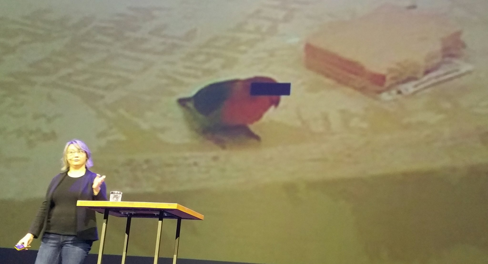
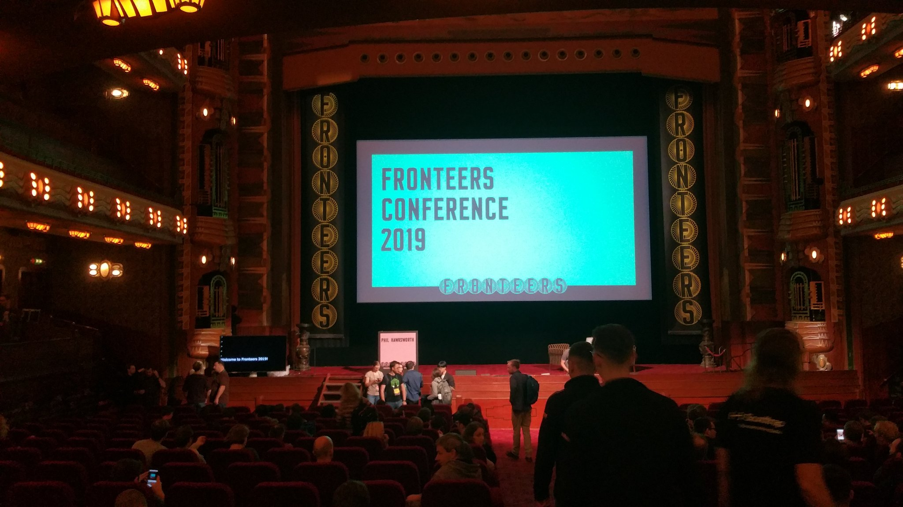
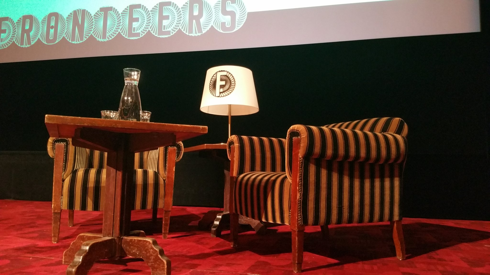
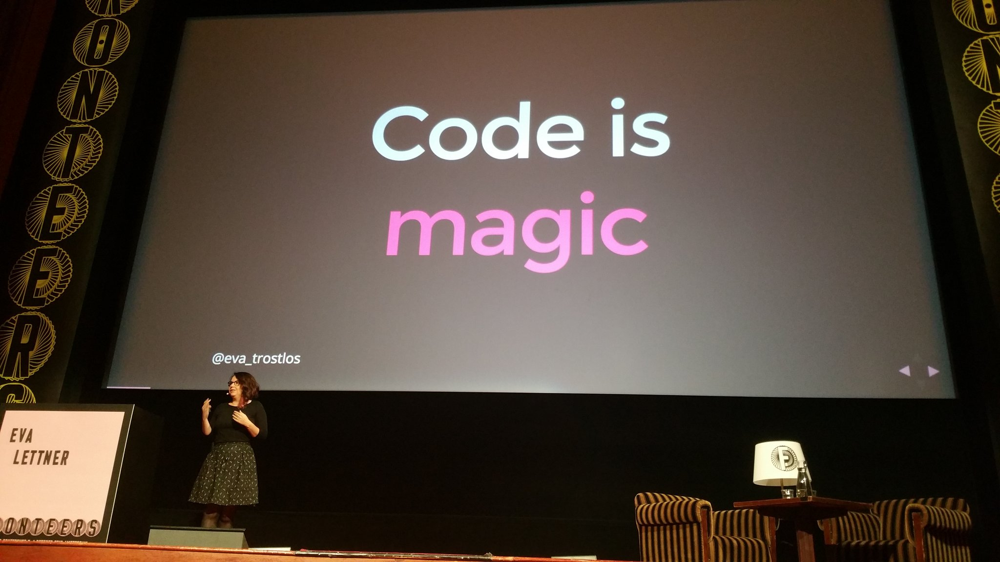
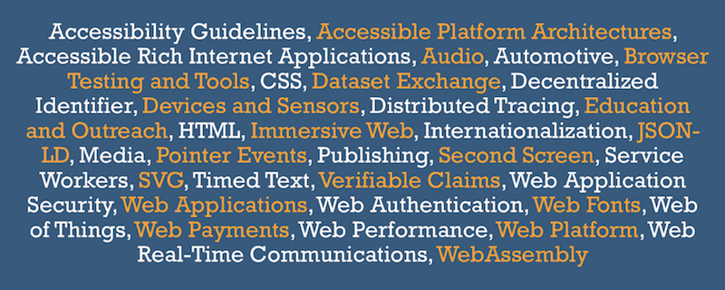
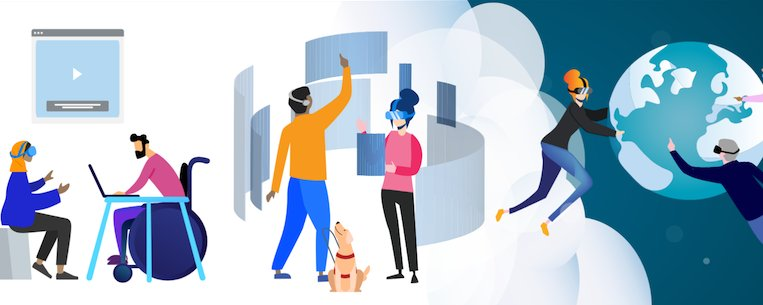

Privacy for all user on the Web! #viewsourceconf @selenamarie
https://twitter.com/w3cdevs/status/1178948373375803394Standards groups panel with @w3c's Strategy lead @wseltzer and @jorydotcom @ioctaptceb @aaronpk @thisNatasha #viewsourceconf

https://twitter.com/w3cdevs/status/1178973557726031872Part of the 'Meet the @w3c' conversation corner team! https://twitter.com/viewsourceconf/status/1179022021323309057

https://twitter.com/w3cdevs/status/1179041091078823937October@w3c: talks, endorsed events, workshop deadline, etc.
https://www.w3.org/participate/eventscal.html

1 Oct.: Day 2 of an awesome and inspiring @ViewSource conference and a chance to meet and discuss with @w3c staff and friends @wseltzer, @marieforgue, @hdv, @yoavweiss and Annette Kik during the afternoon coffee break, in #Amsterdam 🇳🇱 #ViewSourceConf

https://twitter.com/w3cdevs/status/11790910436959723531 Oct.: Also from the @wai team, @sabouzah presents #w3c #Accessibility Conformance Testing (ACT) Rules for #WCAG2 @A11yTesting19 in #WashingtonDC 🇺🇸
https://twitter.com/w3c/status/1176554648615997441
https://twitter.com/w3cdevs/status/11790910643193036801 Oct.: Keynote speaker @shawn_slh presents "The Missing Link: #Accessibility and #Usability Working Together" at the 4th ICT Accessibility Symposium @A11yTesting19 in #WashingtonDC 🇺🇸 https://twitter.com/A11yTesting19/status/1170003019120951296
https://twitter.com/w3cdevs/status/11790910617062522883 Oct.: @hdv explains how Content Management Systems #CMS can make a huge difference for Web #accessibility @FronteersConf's Jam session, in #Amsterdam 🇳🇱 https://fronteers.nl/congres/2019/jam-session

https://twitter.com/w3cdevs/status/11790910767805603875 Oct.: Deadline to submit expression of interest to the #W3CWorkshop on Inclusive Design for Immersive Web Standards https://www.w3.org/2019/08/inclusive-xr-workshop/, 5-6 November 2019 in #Seattle 🇺🇸
https://twitter.com/w3cdevs/status/1167015355686019072
https://twitter.com/w3cdevs/status/117909108026183680010 Oct.: @id24conf celebrates Inclusive Design with 24h of #free #online talks for the global community 🌐. All sessions are streamed live and publicly avail. on the Inclusive Design 24 YouTube channel with live captioning!
https://inclusivedesign24.org/2019/
https://twitter.com/w3cdevs/status/11790910852363304969 Oct.: @JalanbirdW3C speaks @BIC1UK about "Understanding the Digital Audiobook Supply Chain", in #London 🇬🇧
https://www.bic.org.uk/97/Upcoming-Breakfasts/
https://twitter.com/w3cdevs/status/117909108307623116810-12 Oct.: The 14th @ParisWeb edition features 32 conferences and 15 workshops with topics about front-end, back-end, quality, accessibility, etc. in #Paris 🇫🇷 https://www.paris-web.fr/
https://twitter.com/w3cdevs/status/117909108746350592524 Oct: Philippe Le Hégaret @plhw3org gives a keynote on "The rise and future of real-time communications on the Web" at RTC 2019, in Beijing 🇨🇳 #WebRTC
http://2019.rtcexpo.org/en/
https://twitter.com/w3cdevs/status/117909109224501248015-16 Oct.: All things #IoT at the IoT Impact conference and exhibition @IoTAA1 #iotimpact2019, in #Sydney 🇦🇺
https://www.iotimpact.com.au/
https://twitter.com/w3cdevs/status/117909109016886067424-25 Oct.: Two full days of #accessibility training from W3C community participants @a11yTO Conference in #Toronto 🇨🇦
https://conf.a11yto.com/
https://twitter.com/w3cdevs/status/1179091094820331520Magnificent venue #oldmovietheatre and every piece of furniture is @FronteersConf branded! Looking forward to a great conf. #fronteersConf
https://twitter.com/w3cdevs/status/1179652097266110464What else?!
@eva_trostlos #fronteersConf #csslove
https://twitter.com/w3cdevs/status/1179698947092357120Now awaiting for many many (all?) @fronteers' Web #developers and #designers to contribute/test for the #WebPlatform. Thank you Rachel ;) https://twitter.com/rachelandrew/status/1179732850213564419
https://twitter.com/w3cdevs/status/1179741070101483520The deadline was extended until end of this week - if you're interested, hurry up, there are only a few seats remaining. https://twitter.com/w3cdevs/status/1179091080261836800
https://twitter.com/w3cdevs/status/1181912262694580224The #WebXR Device API has been split into 3 modules: a core module covering what WebVR used to provide, a gamepad module covering interactions with gamepads, and an AR module to cover the basic primitives for augmented reality https://twitter.com/w3c/status/1182238893732777984
The links to the github repositories and editors drafts are available from the @ImmersiveWebW3C github home page https://immersive-web.github.io/ along with all the other #ImmersiveWeb proposals under discussion
https://twitter.com/w3cdevs/status/1182285476012666883During #w3cTPAC last month, @atopal says a big thank you to the 76K+ #Web #developers and #designers from 173 countries who participated in the @MDN Developer Needs Assessment survey!
https://vimeo.com/showcase/6372516/video/366244022
Kadir Topal unveiled some interesting survey results about Web technologies' adoption, frustration and satisfaction - see slides at https://www.w3.org/2019/Talks/TPAC/MDN-WEB-DNA.pdf as well as notes from the #w3cTPAC related breakout session:
https://w3c.github.io/tpac-breakouts/sessions.html#mdn
https://twitter.com/w3cdevs/status/1183767368813686784Final results and report out of the survey will be published at the end of the month - stay tuned for more insights on what the community expects from the #WebPlatform!
https://twitter.com/w3cdevs/status/1183767374811541504In this new video, @jorydotcom explains how the @openjsf #JavaScript projects help make the lives of #Web #developers better by solving problems ranging from #Node to #a11y, #i18n, and more!
https://vimeo.com/showcase/6372516/video/366243791
Find out how easy it is to participate in the 32 @openjsf #OpenSource projects that operate on #github and other avenues (slack, weekly meetings on YT, etc.):
https://openjsf.org/collaboration/
https://twitter.com/w3cdevs/status/1184024479804067847At last #w3cTPAC, there were also discussions about opportunities to build and strengthen healthy collaborations between @openjsf projects and @w3c groups. Read notes at https://w3c.github.io/tpac-breakouts/sessions.html#openjs
https://twitter.com/w3cdevs/status/1184024484166225920At last #FronteersConf, @rachelandrew explains why and how you should engage with @w3c as a #Web #developer https://twitter.com/rachelandrew/status/1184106921932054529
Based on her participation as a #developer in @csswg and more recently as a #w3c representative for @fronteers, Rachel shares her experience and reminds that everyone is allowed/encouraged to create #WebPlatform features - you don't need permission!
https://twitter.com/w3cdevs/status/1184475445267443712As a long-time participant in @csswg, she knows that @w3c #WorkingGroups are very happy when #developers and #designers offer feedback on specifications. It could be any spec.!
https://twitter.com/w3cdevs/status/1184475471309955072and 6) write Web platform tests!
https://twitter.com/w3cdevs/status/986283413316472837
https://twitter.com/w3cdevs/status/1184475475818795011So, don't think twice and get started: 1) read and comment on specification issues 2) show use cases 3) contribute examples and diagrams 4) raise browser bugs 5) test and offer feedback on features behind flags ...
https://twitter.com/w3cdevs/status/1184475474279456769After raising an issue, remember that patience is required for #WebPlatform contributions. As Rachel puts it: "It's not that people don't care, it's because they are few people editing specs, with priorities and because we are working on stuff that is very much in the future."
https://twitter.com/w3cdevs/status/1184475478142410753.@rachelandrew is also sharing some of these advices in @smashingmag, along with a call for actions and contributions!
https://twitter.com/w3c/status/1183684928690708480
https://twitter.com/w3cdevs/status/1184475483217547264If you want to learn more about the current status and next steps for #WebXR, listen directly from the expert, with the just-released video of @Lady_Ada_King presentation at our #w3cdevs2019 meetup last month #VirtualReality #VR #AR #AugmentedReality
https://www.w3.org/2019/09/Meetup/speaker-ada.html
.@Lady_Ada_King covers among other things the evolution of #WebXR in a more modular approach, as we described it last week:
https://twitter.com/w3cdevs/status/1182285476012666883
https://twitter.com/w3cdevs/status/1186186307149672449This followed on the proposal made to incubate #WebMonetization in the @wicg_ back in August
https://discourse.wicg.io/t/proposal-web-monetization-a-new-revenue-model-for-the-web/3785
https://twitter.com/w3cdevs/status/1186569651234443264#WebMonetization is a proposed #API standard that allows #websites to request a stream of very small #payments from a user. Getting #WebMonetization on the @w3c standards track was discussed at a breakout session during the plenary day of #w3cTPAC:
https://w3c.github.io/tpac-breakouts/sessions.html#webmonetization
During #w3cTPAC last month, we recorded a quick interview of @justmoon on @Coil plans with #WebMonetization
https://vimeo.com/366243917
https://twitter.com/w3cdevs/status/1186569649225375750You can read up a more in depth interview of @justmoon by @ibjacobs a few weeks ago:
https://www.w3.org/blog/2019/09/w3c-interview-coil-on-interledger-protocol-and-web-monetization/
https://twitter.com/w3cdevs/status/1186569654615052288To learn more about the spec proposal for #WebMonetization, check out their explainer https://webmonetization.org/docs/explainer.html and their github repo: https://github.com/interledger/webmonetization.org/
https://twitter.com/w3cdevs/status/1186569652866076672Check out the interesting agenda! https://www.w3.org/2019/08/inclusive-xr-workshop/agenda.html
#XR standards gives the opportunity to innovate and explore topics ranging from #XR #accessibility user needs to #XR #accessibility (on the Web and beyond) on existing products and prototypes https://twitter.com/w3c/status/1186995440115425280
Thanks to host @PlutoVR and sponsors @Maveron @wemakerealities @VRWorldSociety and Seattle Immersive Technology Association for supporting this #W3CWorkshop chaired by @LeonieWatson of @TetraLogical
https://twitter.com/w3cdevs/status/1187012506646208518In this short video, @AmeliasBrain invites #developers and #designers' contributions for new #SVG features and requirements:
https://vimeo.com/366242912
As #w3c #InvitedExpert, @AmeliasBrain is involved in three
#WorkingGroups: @svgwg, @wai and @csswg #CSS #a11y #VectorGraphics
. She also chairs the recently formed #SVG #CommunityGroup, working hand in hand with @svgwg: https://www.w3.org/community/svgcg/
https://twitter.com/w3cdevs/status/1188740796939411456The main goal of this group is to make it easier for #developers and content creators in the #SVG community to engage with the standardization process.

https://twitter.com/w3cdevs/status/1188740862135529473So have your voice heard! Explore new ideas related to #SVG, test them out, get people excited about them, make proposals, etc.
https://twitter.com/w3cdevs/status/1105118740818128897
https://twitter.com/w3cdevs/status/1188740864522227712And, if you encounter browser implementation bugs or other concerns with current #SVG2 features, please file bug reports - it's very helpful too!
https://github.com/w3c/svgwg/issues
https://twitter.com/w3cdevs/status/1188740868209020929In this new short video, @wendy_a_reid of @kobo/@rakuten, reports on the current status and goals of the @w3c Publishing #WorkingGroup @w3cpublishing
https://vimeo.com/366243892
The @w3cpublishing's main focus now is to bring #accessibility to #publishing, specifically for #audiobooks to make them usable by users regardless of their ability. This spec. is a profile of the Publication Manifest. Find out more in the #github repo: https://github.com/w3c/audiobooks/
https://twitter.com/w3cdevs/status/1188755462033944576During our #w3cdevs2019 #meetup last month in #Fukuoka 🇯🇵, Alice Boxhall @sundress makes the case that #accessibility and #innovation actually go very well together:
https://www.w3.org/2019/09/Meetup/speaker-alice.html
Designing for accessibility leads to better solutions, and in her presentation, @sundress goes through a few examples from both recent and older history of technology where solving problems for people with #disability created solutions for everybody.
https://twitter.com/w3cdevs/status/1188827110070243331As an intersection between #accessibility and #innovation, next week's #W3CWorkshop on inclusive design for #ImmersiveWeb standards is full of promises! #WebXR #a11y
https://www.w3.org/2019/08/inclusive-xr-workshop/
https://twitter.com/w3cdevs/status/1188827126126010370Find out about VRM, a format for #3D #Avatars on the Web, with this recorded presentation of @FMS_Cat during our #w3cdevs2019 meetup last month in #Fukuoka
https://www.w3.org/2019/09/Meetup/speaker-yutaka.html
In this talk, Yutaka Obuchi @FMS_Cat focuses on the Web #API that helps an implementation of 3D character viewer and how they could be improved to make the Web an even better platform for 3D avatars.
https://twitter.com/w3cdevs/status/1189413999022088192Congrats to editors Wilco Fiers, @moekraft, @1mjmueller and @sabouzah for the newly published @w3c #WebStandard Accessibility Conformance Testing (ACT) Rules Format 1.0, for writing shared #accessibility test rules - #timetoadopt! https://twitter.com/w3c/status/1189818330565292032
https://twitter.com/w3cdevs/status/1189896600967094277The global Web community and Japanese #developers came to listen to this year's exceptional speakers showing that the Web is an exciting development platform. See the videos of their presentations. With many thanks again to the #w3cdevs2019 sponsors who made it possible! https://twitter.com/w3c/status/1189894959756972033
https://twitter.com/w3cdevs/status/1189899096385114113🗓️November@w3c: workshop, f2f meeting, SymposiumX, etc. https://www.w3.org/participate/eventscal.html

5-6 Nov.: A #W3CWorkshop on inclusive design for #ImmersiveWeb #standards in #Seattle 🇺🇸, hosted by @PlutoVR, @Maveron,@wemakerealities,@VRWorldSociety and Seattle Immersive Technology Association, and sponsored by @Google, @TwitchDev and @samsunginternet

https://twitter.com/w3cdevs/status/118991036294819430419 Nov.: The 5th #f2fmeeting of the @w3c Spatial Data on the Web #InterestGroup, in #Toulouse 🇫🇷, co-located with the 113th @opengeospatial technical committee #OGC19FR
https://www.w3.org/2017/sdwig/meetings/f2f-5.html
https://twitter.com/w3cdevs/status/118991038080763085213-14 Nov.: @w3c team member @ConnectorKaren is at the IOT Tech Expo North America conference @iottechexpo, in #SantaClara 🇺🇸 Topics: #IoT, #5G, #security, #blockchain, and more.
https://twitter.com/iottechexpo/status/1153617567442964480
https://twitter.com/w3cdevs/status/118991037803524096020 Nov.: @RachelYager of @FortuneTimesNYC and @w3c organize SYMPOSIUMX on new #monetization models and emerging innovations in #NYC, 🇺🇸. Register now! https://www.eventbrite.com/e/symposiumx-financial-innovation-on-the-web-and-new-monetization-models-tickets-61762979735 #WebMonetization #Payments
https://twitter.com/w3cdevs/status/1189910383353565184